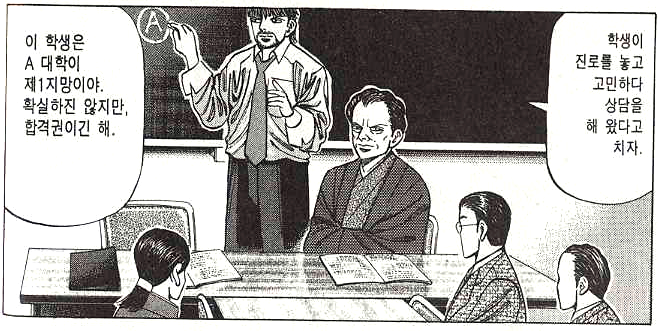
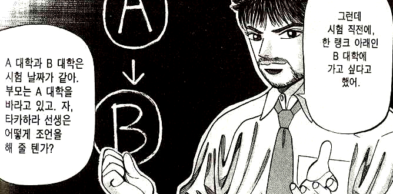
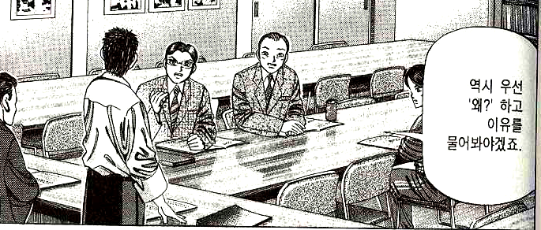
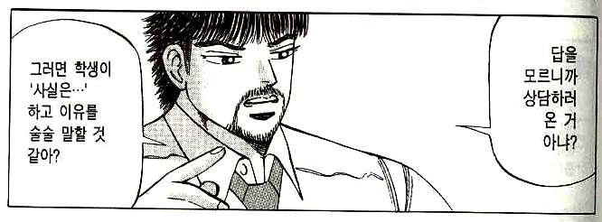
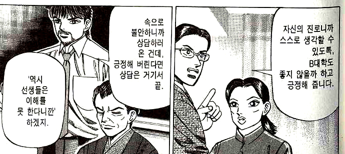
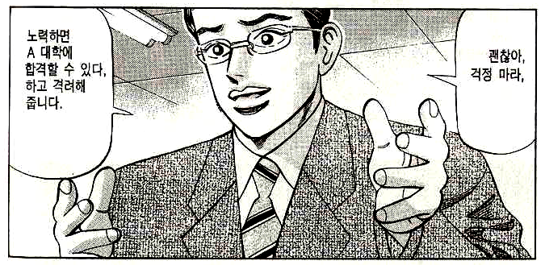

<사례1>불안하다고 말하는 상대방에게 "왜 불안해?"라고 묻는 경우(예능 <나는 가수다> 일부).
<사례2>화가 났다고 말하는 상대방에게 변명하고 해명하는 경우(드라마 <보석비빔밥> 일부).
<사례3>상담 상황에서 교사들의 미숙한 대화를 보여주는 만화(만화 <꼴찌, 동경대 가다> 일부.
 
여기서 가장 중요한 것은 2단계이다. 2단계를 많이 해줄수록, 정확하게 해줄수록, 듣기의 공감 효과는 커진다.
위의 만화에 적용하면 다음과 같이 된다.
학생: 부모님도 A대학 가라 하시고 저도 A대학을 준비했는데 그냥 B대학 시험치면
안 될까요?
교사: (1단계) 부모님도 A대학 가라 하시고 너도 A대학을 준비했는데 그냥 B대학
시험치고 싶다는 말이구나.
학생: 네.
교사: (2단계) 그렇다면 너는 불안하고, 걱정되고, 두렵겠구나.
학생: 네.
교사: (3단계) 네가 진짜 원하는 대학 입시에서 실패하지 않고 나중에 후회하지 않을
선택을 하고 싶다는 것이구나.
우리 아이가 달라졌어요 from Jangi ster on Vimeo.
공감적 듣기를 교사가 실천하는 것만큼이나 학생들에게 가르치는 것이 필요하다. 예를 들어 수업 중에 딴짓하는 학생에게 교사가 지적을 한다면 다음과 같이 된다. 학생이 이와 같이 교사의 말을 들을 수 있으면 수업 중 갈등이 거의 발생하지 않고 평화로운 교실이 된다.
교사: 너 수업 안 듣고 뭐해?학생들끼리도 공감적 듣기를 실천하도록 하고, 이를 위해 수행평가를 낼 수도 있다. 특히 "공감적 듣기"를 통해 상대의 '말'이 아닌 '마음'을 듣고 나면, 상대의 말을 잘 들어주고 싶다는 생각이 절로 들게 마련이다. 다음은 중1 학생이 실제로 했던 대화를 녹취하여 제출한 과제이다.
상황: 친구가 미술 준비물을 사야 되는데 돈이 없어서 나한테 요청한 상황 대화
친구: 지혀낭 ㅠㅠ
나 : 왱
친구: 나 미술 준비물 낼 사가야 되는뎅 돈이 없쪙
나 : 헐.. 근까 니 말은 미술 준비물 사야 되는데 돈이 없다는 거징.
친구: 마자 ㅠㅠ
나 : 그면 닌 불안하구 속상하구 당황했겠구낭
친구: 마쟈 마쟈 ㅠㅠ
나 : 내가 돈을 빌려줬으면 좋겠다는 말이구나
친구: 웅.. 고마웡..
나 : 알겠엉~ 목욜에 줄껭~! 그리고 갚아.
소감: 사실 빌려주기 싫은데 이런 대화를 하니까 꼭 빌려주고 싶었다.
이런 모형의 장점을 인정하면서도, “매번 아이를 데리고 당연한 일들에 대해 토론을 하는 건 시간을 너무 많이 뺏기는 일이에요. 전 그렇게 한가하지 못해요.”와 같은 회의적인 반응을 보이는 경우가 있다. 그러나 실제로 해 보면 이러한 듣기 모형에 따라 대화를 할 때, 오히려 시간이 덜 걸린다. 뿐만 아니라, 아이가 스스로 결론을 내리기 때문에 결심이 지속되는 효과도 더 크다. 문제를 빨리 해결하려고 상대방에게 “쓸데없는 소리 하지 말고 시키는 대로 해.”라고 말했다가 결론 없는 감정싸움으로 번지기도 하고, 기껏 충고와 조언을 해 주었더니 알려준 대로 하지 않고 결국 자기 마음대로 하는 상대방을 보면서 마음이 허전해지는 경험은 누구에게나 있을 것이다. 그것은 실패한 대화에 가깝다. 이제 우리는 다음에서 진정으로 ‘듣고 있는’ 사람이 누구인지를 구분할 수 있게 되었다.
학생: 저 슈퍼스타K 시즌4에 나가고 싶은데요, 제가 음악 쪽에 소질이 있어 보이세요?
교사1: 그런 프로에는 아무나 나가는 게 아니야. 넌 끼도 부족하고 노래도 그냥 조금 잘하는 것뿐이지.
현실을 직시하는 게 어때?
교사2: 우와 그런 생각을 다 하고 멋지다. 일단 한번 나가 보면 좋은 경험이 될 거야 혹시 아니? 네가
우승할지도 모르지. 얼른 신청해.
교사3: 슈퍼스타K 시즌4에 나가고 싶은데 네가 음악에 소질이 있어서 잘 해낼 수 있을지 궁금하다는
말이구나.
대화에서 "공감적 듣기"의 중요성을 알고 실천하는 사람 중에서 "공감적 말하기"에 대해서는 생각을 못하는 경우가
있다.
"공감적 듣기"를 학생, 친구, 부모에게 실천하려고 노력하는 사람 중에는 "남의 말만 다 들어주니까 나는 너무
피곤해요. 지쳐요. 내 마음은 누가 공감해 주나요?", "학생들이 말을 다 맞다고 공감해 주면, 잘못을 했을 때는 어떻게
지적하나요?"라고 묻는 사람이 있다.
'피곤함', '지침'을 느끼거나, '잘못한 행동'에 대하여 '부당함'을 느꼈다면 "공감적 말하기"를 해야 한다.
"공감적 듣기"가 상대방이 아무리 개떡같이 말해도 내가(청자가) 찰떡같이 알아듣는 대화법이라면,
"공감적 말하기"는 상대방이 아무리 말귀를 못 알아듣는 벽창호 같은 사람이라도 내가(화자가) 상대가 알아듣도록 말하는
대화법이라 할 수 있다.
여기서 가장 어려운 것은 1단계이다. 사람들은 자신이 보고 들은 것과 판단한 것을 잘 구별하지 못한다.
"네가 떠들었잖아." - 학생이 떠들 때 내가 보거나 들은 것은 학생이 '다른 학생과 말하는 것'이다. 학생이
'떠든다'라는 것은 나의 판단이다.
"내 말 무시하지 마." - 상대가 내 말을 무시할 때, 내가 보거나 들은 것은 상대나 '내가 말한 대로 행동하지
않음', '내가 한 말을 다시 물어 봄', '내가 말한 뒤에 대답하지 않음' 등일 뿐이다. 상대가 '무시한다'라는 것은 나의
판단이다.
"네가 친구를 때렸구나." - 때렸다기보다는, '너의 손이 친구의 머리에 닿았고, 그래서 친구가 아프다는 표정을 지으며
왜 때리냐고 말을 했다.'라는 것이 더 정확한 묘사이다.
다음으로 어려운 것은 2단계이다. 학생이 친구를 때리는 것을 볼 때, 교사들은 학생을 지도하면서 맞은 친구의 기분을
상상해 보게 하는 경우가 많다. 하지만 진짜 중요한 것은 학생을 지도하게 된 교사 자신의 기분이다. 반드시 그것을 말해야 한다.
3단계에서 중요한 것은 "부정문"으로 진술하지 않는 것이다. "내가 진짜 원하는 것은 네가 친구를 때리지 않는
거야."라고 말하는 교사가 "그럼 친구를 때리지는 않고 놀리거나 밀치면 된다."라고 원하지는 않을 것이다. "3단계를"부정문"으로
진술하면 상대방은 내 말을 정확하게 이해하지 못하는 경우가 많다.
어른: 루시, 내가 어제 널 봤을 때, 니가 나한테 굉장히 상처주는 말을
했어.(1단계) 나는 그게 싫었고 기분이 상했어.(2단계) 네가 그걸 알아줬으면 좋겠어.(3단계)
아이: 미안해요.
어른: 고마워. 정말 좋은 아이구나.
이 대화에서 중요한 것은 어른의 마지막 대사이다. "정말 좋은 아이구나." 원래 공원에서 겪은 일을 바탕으로 한다면 아이는 어른에게 무례하고 나에게 상처를 주는 밉고, 나쁜 아이로 인식된다. 하지만 어른 즉, 화자가 "공감적 말하기"를 정확하게 하고 나서는 그 상대방 아이가 "좋은 아이"로 인식된다. 이것은 아이가 훌륭한 말로 사과를 했기 때문이 아니다. 화가 난 본인이 "말하기 기술"에 따라서 정확하게 대화를 했기 때문이다.
위 영상에서 아이는 그냥 자기 마음대로 살아간다. 기분 내키면 상대에게 모욕을 주고, 또 기분 내키면 상대에게 사과도
한다. 그 아이를 좋게 보고 나쁘게 보는 것은 모두 "어른의 몫"이다. 우리도 마찬가지이다. 어떤 사람이 나에게 상처를 줄 때,
눈치를 줄 때, 기분 나쁜 말을 할 때, 그 사람은 우리에게 상처를 줬는지, 눈치를 줬는지, 기분 나쁜 말을 했는지조차도 모를
때가 있다. 또 나중에 알고 보면 전혀 그런 의도가 아닌데 우리가 스스로 눈치를 보거나, 잘못 이해하고 상처받는 경우도 많다.
그때, 어떤 사람을 "상처 주는 사람, 눈치 주는 사람, 기분 나쁘게 하는 사람"으로 남겨 둘 것인지는 전적으로 그
사람에 달린 것이 아니라 "나"에게 달려 있다. 나의 기분이 그 사람에게 좌우되는 것이 아니다. 상대의 말이나 행동에 따라 나의
기분이 좌지우지되는 인생은 얼마나 불쌍한가? 당당하기 자기 감정을 표현하여 상대에게 공감을 얻어내는 말하기 방법을 사용할 수
있다면 그 어떤 사람과도 잘 지낼 수 있다.
나를 상처주는 사람, 기분 나쁘게 하는 사람 등에게 말을 걸고 싶을 때, 말로 풀고 싶을 때, 바로 그 "공감적
말하기"의 방법(기술)을 내가 익혔는지가 문제가 되는 것이다. 감정을 풀려고 말을 걸었다가 더 싸움이 나는 경우를 우리는 익히
알고 있다.
부정적인 감정 때문에 말을 걸었으면서도 ‘감정’은 없고 ‘사실’의 문제를 해결하고자 하는 것처럼 돌려서 표현하는
사람들이 있다. 그런 사람과 대화하면 매우 피곤하다. 우리는 남을 피곤하게 하는 사람이 되어서는 안 되며 솔직담백한 사람이 되어야
한다. 특히 “학생”을 대하는 교사의 입장에서는 더욱 그렇다. 감정을 세세하게 표현하는 것이 감정을 콘트롤하지 못하는 사람으로
비칠까봐 걱정하는 사람이 있는데, 느낀 감정을 표현하는 사람과 느낀 감정에 휩싸여 스스로를 잃는 사람은 전혀 다른 사람임을 알아야
한다.